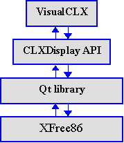

Взаимодействие с системой: Linux API и Qt library
В процессе разработки приложений в средах Delphi и Kylix время от времени возникает необходимость в обращении непосредственно к прикладному интерфейсу системы. Это происходит по двум причинам: во-первых, несмотря на широчайший выбор компонентов, библиотека VCL/CLX не в состоянии охватить все возможности, предоставляемые операционной системой. Во-вторых, даже в том случае, когда среда разработки предоставляет готовый компонент, обладающий соответствующей функциональностью, в целях повышения быстродействия имеет смысл использовать системные функции, лежащие в основе компонента.
В Delphi интерфейсы большинства системных функций определены в библиотеках времени выполнения (run-time libraries), а для упрощения реализации недостающих интерфейсов в язык Object Pascal введены элементы, облегчающие "перевод" деклараций функций и объектов с С++ на Object Pascal и взаимодействие с системными библиотеками. Фактически, можно утверждать, что интерфейс Win32 API полностью доступен в Delphi.
Разработчики Kylix также постарались сделать интерфейс системы Linux максимально доступным в среде Object Pascal. Однако, при программировании в Kylix, непосредственное взаимодействие с системой осуществляется несколько сложнее, чем в Delphi и Windows.
Прежде всего, следует учесть, что Linux не так "монолитна", как Windows. То, что мы дальше будем называть "интерфейсом системы" состоит из нескольких независимых друг от друга частей. В Linux графическая подсистема отделена от остальной операционной системы и в принципе эта 32-х разрядная многозадачная ОС может использоваться вообще без графического интерфейса. У такого подхода есть свои преимущества: при решении ресурсоемких задач вся мощность процессора может быть брошена на выполнение полезной работы, а не затрачиваться на перерисовку окон. Кроме того приложениям с текстовым интерфейсом присуща большая стабильность. Работа с графикой в Linux осуществляется на основе сервера XFree86. Эта графическая подсистема предоставляет в распоряжение программиста интерфейсы для выполнения базовых операций, необходимых для построения графического интерфейса пользователя и вывода графической информации. При решении большинства задач у программиста не возникает необходимости писать код, взаимодействующий непосредственно с XFree86. Дело в том, что над XFree86 существует несколько "надстроек", облегчающих работу с графикой и построение пользовательского интерфейса. Одной из таких надстроек является библиотека Qt library, на базе которой реализована графическая оболочка KDE. Qt library является также основой набора компонентов VisualCLX, - аналога VCL для Kylix. Следует отметить, что библиотека Qt реализована не только на Linux. Существуют версии Qt для Mac OS, Solaris и даже для Windows. Ожидается, что поддержка Qt будет введена в Delphi 6.0, что в свою очередь еще больше упростит перенос приложений между Kylix и Delphi.
В Kylix большая часть системных функций Linux инкапсулирована в модулях System, SysUtils и т. д., а большинство возможностей Qt library реализовано в наборе компонентов VisualCLX. Кроме этого Kylix предоставляет программисту возможность непосредственной работы как с интерфейсами Linux, так и с классами библиотеки Qt. Далее мы рассмотрим эти возможности подробнее.
Kylix и Linux API
Импортирование функций Linux API осуществляется достаточно просто и очень похоже на импортирование функций из Windows DLL. В Linux аналогом DLL являются разделяемые библиотеки (shared object files, so files). Обычно имена файлов разделяемых библиотек включают расширение .so. Не следует путать эти файлы с файлами объектного кода. Модули времени выполнения Kylix импортируют многие функции Linux API. Например, модуль Libc импортирует функции glibc - GNU C library. Между именами функций glibc и их декларациями в Libc существует четкое соответствие, так что для изучения функций модуля Libc можно воспользоваться документацией по glibc и страницами man. Между прочим, если в окне редактора кода поместить курсор на имя glibc функции и нажать F1, будет открыто не окно справки Kylix, а соответствующая man-страница.
Рассмотрим, например, glibc функцию fork, которая создает в системе новый процесс, являющийся точной копией того процесса, из которого вызвана эта функция. В glibc данная функция определена следующим образом:
pid_t fork (void);
В модуле Libc декларация этой функции выглядит так:
function fork: __pid_t; cdecl;
Обратите внимание на указание формата вызова cdecl. Этот формат используется по умолчанию для вызова системных функций Linux, также как в Delphi для вызова функций Win32 API используется stdcall.
Вы сами можете импортировать функции из разделяемых библиотек. В следующем примере осуществляется импортирование функции vga_setmode из библиотеки VGAlib (разделяемый файл libvga.so). В заголовке библиотеки, написанной на С, эта функция объявляется как
int vga_setmode (int mode);
В модуле Kylix пишем:
… interface function SetVGAMode (Mode: Integer) : Integer; cdecl; … implementation function SetVGAMode; external 'libvga.so' name 'vga_setmode'; …
Интеграция кода, написанного на C/C++, и Kylix-приложений будет рассмотрена подробнее в следующих статьях.
Kylix и Qt library
Библиотека Qt library является основой библиотеки VisualCLX точно также, как Windows GUI API является основой Delphi VCL. Большинство компонентов VisualCLX можно рассматривать как "Object Pascal оболочки" соответствующих объектов Qt library.
Однако механизм взаимодействия между VisualCLX и Qt library сложнее, чем механизм взаимодействия между VCL и Windows GUI API. На рисунке справа показаны различные уровни интерфейсов между XFree86 и VisualCLX. На схеме видно, что между VisualCLX и Qt library лежит "прослойка" CLXDisplay API. Необходимость в этой "прослойке" вызвана тем, что Qt library - это не набор функций, а иерархия классов С++. В Object Pascal не существует возможности импортировать классы С++ непосредственно, и разработчикам Kylix пришлось пойти в обход этой проблемы.
Идея CLXDisplay API заключается в трансляции методов классов в функции. (Говоря о классах, я буду использовать терминологию Object Pascal, а не С++). Для обращения к какому-либо методу экземпляра класса Qt library вызывается соответствующая функция, которой в качестве одного из параметров передается указатель на экземпляр класса, для которого должен быть вызван данный метод.
Поясним вышесказанное на простом примере: Допустим, в библиотеке, написанной на С++, реализован класс QSomeClass. У этого класса есть конструктор, деструктор и метод Method1. Для того, чтобы сделать методы класса С++ доступными в Object Pascal, мы пишем на С++ библиотеку-оболочку для данного класса, экспортирующую функции QSomeClass_Create, QSomeClass_Destroy и QSomeClass_Method1. Теперь, для того, чтобы в программе, написанной на Object Pascal, создать экземпляр класса QSomeClass, мы вызываем функцию QSomeClass_Create, и передаем ей в качестве параметров значения, требующиеся конструктору класса. Написанная на С++ функция QSomeClass_Create создает экземпляр класса QSomeClass и передает значения своих параметров его конструктору. В качестве результата функция возвращает некий идентификатор созданного экземпляра, например, указатель на него. Таким образом мы можем создать несколько экземпляров класса QSomeClass. Если теперь мы хотим вызвать метод Method1 для одного из экземпляров QSomeClass, мы вызываем функцию QSomeClass_Method1, передавая ей в качестве одного из параметров значение, возвращенное функцией QSomeClass_Create. Оболочка класса вызывает метод Method1 для экземпляра, соответствующего переданному идентификатору, передает этому методу необходимые параметры и затем, если нужно, возвращает значение, возвращенное методом Method1. Для уничтожения экземпляра QSomeClass вызывается функция QSomeClass_Destroy, которой передается идентификатор этого экземпляра.
Таким образом можно сказать, что CLXDisplay API представляет собой набор функций, "деклассирующих" библиотеку Qt library. Для упрощения работы с этим интерфейсом имена функций строятся по определенной системе. Рассмотрим для примера Qt класс QPushButton. Класс QPushButton реализует кнопку - элемент пользовательского интерфейса и является основой класса TButton из библиотеки VisualCLX. У класса QPushButton есть несколько конструкторов, деструктор и ряд методов, таких как SetDefault, IsDefault, SetFlat и т. д. Далее мы рассмотрим, какие функции для работы с этим классом предоставляет CLXDisplay API. Функции интерфейса CLXDisplay API объявляются в Kylix модуле Qt, который поставляется с исходным текстом. В комплект документации, поставляемой с Kylix, справочник по CLXDisplay API не входит, так что нашими главными источниками информации по этому вопросу будут файл Qt.pas из поставки Kylix и документация к Qt library.
Из файла qpushbutton.h, входящего в Qt library, явствует, что у класса QPushButton три конструктора:
QPushButton( QWidget *parent, const char *name=0 );
QPushButton( const QString &text, QWidget *parent, const char* name=0 );
QPushButton( const QIconSet& icon, const QString &text, QWidget *parent, const char* name=0 );
Каждому из этих конструкторов соответствует своя функция в модуле Qt:
function QPushButton_create(parent: QWidgetH; name: PAnsiChar): QPushButtonH; overload; cdecl;
function QPushButton_create(text: PWideString; parent: QWidgetH; name: PAnsiChar): QPushButtonH; overload; cdecl;
function QPushButton_create(icon: QiconSetH; text: PWideString; parent: QWidgetH; name: PAnsiChar): QPushButtonH; overload; cdecl;
Обратите внимание на спецификатор overload. В качестве префикса к имени функции используется имя класса, в данном случае QPushButton. Далее следует _create, означающее, что функция создает экземпляр класса и вызывает его конструктор. Все три функции возвращают значение типа QPushButtonH, которое является ссылкой на созданный экземпляр объекта. Это значение следует передавать другим функциям для работы с экземпляром QPushButton. Имя типа ссылки на экземпляр класса составляется из имени класса с добавлением H. Обратите внимание на переменную parent типа QWidgetH - эта переменная является ссылкой на экземпляр одного из потомков класса QWidget, базового класса Qt library. В этом параметре передается ссылка на экземпляр объекта пользовательского интерфейса, которому принадлежит создаваемая кнопка. В иерархии указателей действуют те же правила, что и в иерархии классов: переменной типа QWidgetH можно присваивать указатель на экземпляр любого класса-потомка QWidget. В переменной name передается имя экземпляра. Оно используется в некоторых средах разработки и для поиска экземпляра объекта в иерархии объектов. Вы можете присваивать этой переменной любое значение.
Для уничтожения экземпляра объекта QPushButton служит процедура QPushButton_destroy:
procedure QPushButton_destroy(handle: QPushButtonH); cdecl;
В качестве единственного параметра этой функции передается ссылка на экземпляр объекта, который нужно уничтожить. Для вызова метода SetFlat, отключающего или восстанавливающего вывод границы для неактивной кнопки, служит процедура QPushButton_setFlat:
procedure QPushButton_setFlat(handle: QPushButtonH; p1: Boolean); cdecl;
Для проверки того, является ли данная кнопка элементом управления, выбираемым по умолчанию предназначена функция
function QPushButton_isDefault(handle: QPushButtonH): Boolean; cdecl;
В начале этого раздела было отмечено, что в основе компонентов VisualCLX лежат классы Qt library. Можно ли получить доступ к экземпляру класса Qt, соответствующему данному экземпляру класса VisualCLX? VisualCLX предоставляет такую возможность. Для каждого класса VisualCLX определено свойство Handle, которое во время выполнения программы содержит ссылку на "нижележащий" класс Qt library. Эта ссылка позволяет вызывать методы класса Qt. Рассмотрим конкретный пример. Пусть при проектировании пользовательского интерфейса приложения в окне формы была создана кнопка - компонент класса TButton. Это означает, что в программу была введена переменная Button1 : TButton. Как и следовало ожидать, свойство Button1.Handle имеет тип QPushButtonH. Воспользуемся этим указателем для доступа к Qt объекту и сделаем данную кнопку элементом управления по умолчанию:
QPushButton_setDefault(Button1.Handle, True);
Конечно, тоже самое можно было бы сделать и при помощи свойства Default объекта Button1.
В заключение отмечу одну юридическую тонкость, касающуюся использования Qt и Kylix. Библиотека Qt library распространяется на основе двух типов лицензий: бесплатной и коммерческой. Если Вы получили Qt в составе дистрибутива Linux, значит Вы являетесь обладателем бесплатной лицензии. За коммерческую лицензию Вам придется заплатить дополнительно. Бесплатная лицензия дает Вам право на разработку Qt приложений при условии, что эти приложения будут распространяться на основе General Public License (GPL), т. е. вместе с исходным текстом. Для того, чтобы иметь право распространять Qt приложения на коммерческой основе, Вам потребуется коммерческая лицензия. Если Вы являетесь пользователем легальной копии Kylix, т. е. обладаете лицензией Borland, Вы имеете право создавать при помощи Kylix как открытые, так и коммерческие приложения, даже если у Вас нет коммерческой лицензии на использование Qt. Однако тут действуют некоторые ограничения:
Если Вы используете в коммерческом приложении элементы CLXDisplay API, Ваше приложения должно содержать экземпляр TApplication и хотя бы один компонент, являющийся производным от TControl. В противном случае Вы должны либо распространять приложение на основе GPL, либо приобрести коммерческую лицензию на использование Qt.
Если в создаваемом приложении Вы используете Qt-функциональность, не связанную с CLXDisplay API, (например, взаимодействуя непосредственно с С++ модулями Qt), Вы также должны либо сделать приложение открытым, либо приобрести коммерческую Qt лицензию.
Есть, конечно, и третий путь - просто наплевать на все лицензии, однако я Вам этот вариант не советую.
В этой статье была описана работа с Linux API и вызовы методов объектов Qt library из программы, написанной на Object Pascal. Однако, для того, чтобы воспользоваться мощью Qt в полной мере, необходимо также уметь создавать свои обработчики событий Qt library. О том, как это сделать, будет рассказано в следующей статье.
Статья и примеры программ © 2001 Андрей Наумович Боровский.
Взято из http://forum.sources.ru